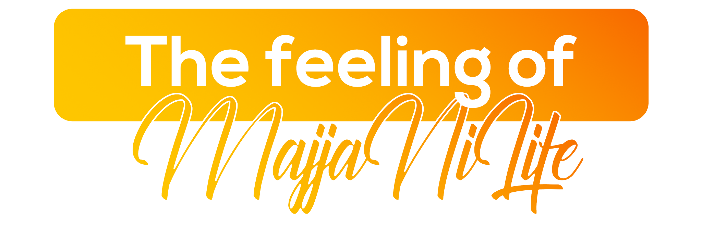

The Feeling of Majja Ni Life
Where heritage meets innovation — celebrating every moment with happiness, hard work, and continuous growth.
Ahmedabad is where heritage meets innovation. India's first UNESCO World Heritage City is a vibrant blend of ancient architecture, thriving street food culture, and a booming startup ecosystem. The philosophy of #MajjaNiLife — celebrating every moment with happiness, hard work, and continuous growth — defines the spirit of this incredible city.
As one of Gujarat's most dynamic cities, Ahmedabad offers exchange participants a unique window into Indian entrepreneurship, rich Gujarati culture, and the warmth of a community that treats every visitor like family.

What makes Ahmedabad unforgettable.

A few hours from Ahmedabad, the Rann of Kutch is an otherworldly white salt desert that transforms under the full moon into something that looks more like the Arctic than India. Surrounding villages — Bhujodi, Hodka, Bhuj — preserve embroidery and craft traditions found nowhere else on earth. The Rann Utsav festival from November to February makes it one of India's most atmospheric short trips.

The 15th-century Kankaria Lake is Ahmedabad's great public commons — a 2.5-kilometre walkway encircling water where the entire city gathers to breathe. Zoo, toy train, heritage village, and evening food stalls line the lakefront. It is accessible, loved by all, and genuinely peaceful in the early morning.

At 182 metres, the Statue of Unity near Vadodara is the tallest sculpture in the world — a tribute to Sardar Patel, who unified India's 562 princely states after independence. The viewing gallery at 153 metres looks out over the sweeping Narmada valley. It is India's most ambitious modern monument, built in just 33 months.

Gir National Park is the only place on earth where Asiatic lions survive in the wild — a subspecies once ranging from Greece to Bihar, now protected in 1,412 square kilometres of dry teak forest. Six hours from Ahmedabad, it stands as one of the great wildlife conservation successes of the 20th century. Safaris run year-round except during the monsoon closure.

The Gujarati thali may be the greatest vegetarian meal in India — rotating small bowls of dal, kadhi, and vegetables around endless bread and rice, replenished until you stop. Manek Chowk by night transforms from a jewellery district into one of Ahmedabad's most celebrated street food destinations. Eating here is social, abundant, and unlike anywhere else in the country.

For nine nights each October, Ahmedabad's Navratri draws hundreds of thousands of dancers in traditional dress to garba grounds across the city — the largest such festival in the world. The event has been recognised by UNESCO as an Intangible Cultural Heritage. For an exchange participant, joining this communal celebration is an experience that stays with you long after you leave.

On 14 January each year, every rooftop in Ahmedabad becomes a battlefield as manja-strung kites fill the sky from before dawn until long after dark. Uttarayan effectively shuts the city down for the day, replacing ordinary life with communal competition, rooftop feasts, and festival energy. It is one of India's most exhilarating and most inclusive public events.

Ahmedabad's entrepreneurial culture runs deeper than most Indian cities — the same trading instincts that built Gujarati merchant networks across continents now power a startup ecosystem centred on IIM Ahmedabad. The city has produced significant companies in consumer tech, logistics, and social enterprise. For exchange participants interested in business, the connections and energy here are exceptional.
Everything you need to know before arriving in Ahmedabad.
Options include hostels, host families, and shared flats — ideally within a 4 km radius of your workplace. Your local committee will help arrange everything.
Expect to spend approximately ₹8,000–10,000 per month covering travel, food, and miscellaneous expenses. Accommodation costs are separate.
Get around via cabs (Ola/Uber), auto-rickshaws, and local AMTS/BRTS buses. The city is well-connected and affordable to navigate.
You'll need a valid Indian visa for your exchange. Your local committee will provide a detailed visa guide and assist with the application process.
Ahmedabad has excellent healthcare facilities. Your local committee will share health and safety guidelines and be available 24/7 for support.
The local language is Gujarati, but English and Hindi are widely spoken. You'll pick up key phrases quickly — locals love teaching visitors!
Pick up a Jio, Airtel, or Vi prepaid SIM at the airport or any local store. Affordable data plans give you excellent 4G/5G coverage across Ahmedabad.
Dress modestly at temples and religious sites; remove shoes at entrances. Greet with a warm "Kem Chho" or "Namaste." Gujarat is a dry state — alcohol is restricted.
Three ways to experience Ahmedabad through AIESEC.

A 6–8 week volunteering exchange program for ages 18–30, focused on sustainable development goals. Make a tangible impact on local communities while immersing yourself in Gujarati culture.

A professional internship experience designed to accelerate your career development in a global setting. Work with Ahmedabad's growing industries and gain real-world professional skills.

Bridge educational gaps by teaching in Ahmedabad's schools and communities. Develop culturally responsive pedagogy while making a lasting impact on young Indian learners.

Your dedicated team in Ahmedabad, led by LC President Dishil Jain.
Reach out to our national team for any questions about exchanges in Ahmedabad.
